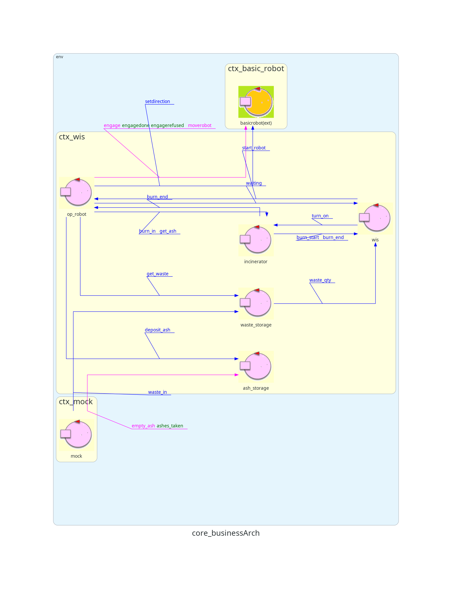

Sprint 1
Nello Sprint precedente sono state analizzate le problematiche e progettato il sistema relativo al Core Business
(WIS-OpRobot-WasteStorage-Incinerator-AshStorage).
Alla fine dello Sprint è stata fornita una prima demo
del sistema.

Sprint Goal
Gli obiettivi di questa fase sono due:
-
Analizzare le problematiche relative al Monitoring Device.
-
Progettare e fornire al committente una prima demo del componente Monitoring Device e integrarlo con il
Core Business progettato nella fase precedente.
Analisi del problema
Come modellare il Monitoring Device e i suoi componenti
Dall'analisi dei requisiti si è constatato come il Monitoring Device debba girare come entità separata su un
Raspberry PI. Verrà
quindi modellata in un contesto separato rispetto a quello del CoreBusiness.
Nasce il problema di come modellare i suoi due componenti (
Sonar e
Led) le possibilità sono due:
- Sonar e Led vengono modellati come POJO all'interno dell'attore Monitoring Device.
- Sonar e Led sono due attori all'interno del contesto Monitoring Device.
L'opzione scelta è la seconda, in quanto il
Led deve reagire a dei comandi da altri componenti e quindi
non può essere riducibile ad un POJO all'interno di un possibile attore Monitoring Device.
Di conseguenza, il sonar viene anch'esso modellato come un attore.
Led
Il LED, come accennato, è un attore che, da requisiti, deve cambiare il suo stato in base a cambiamenti
all'interno del sistema del
Core Business.
Questa informazione può essere fornita da:
- Il Led stesso controlla attivamente lo stato del sistema
- Il WIS gli comunica lo stato attuale del sistema
La seconda opzione sembra più opportuna perchè il WIS è stato già definito come controllore del sistema e
contiene già al suo interno lo stato corrente del sistema, inoltre
il LED non dovrebbe avere nessun'altra responsabilità a parte accendersi, spegnersi e lampeggiare rifacendosi
così al SingleResponsibilityPrinciple.
Come il WIS comunica col Led
Il WIS per comunicare al Led in quale stato si dovrebbe trovare si potrebbe:
-
3 messaggi ognuno relativo a uno stato del Led
-
Un singolo messaggio con contenuto differente
Si preferisce avere un singolo messaggio (opzione 2) in modo da semplificare l'interfaccia del Led e del sistema
e si ritiene più opportuno che questo messaggio sia modellato come Dispatch dato che è una informazione
fire-and-forget che il WIS invia al Led senza bisogno di una risposta con un contenuto significativo.
Sonar
Come accennato precedentemente viene modellato come attore. Il suo compito è quello di misurare costantemente il
livello di cenere all'interno dell'
Ash Storage. Una volta che il livello misurato è minore di una soglia
DLIMIT, il container è considerato pieno.
Da requisiti il
WIS deve ricevere informazioni dal Sonar circa la quantità di cenere rilevata.
Per modellare tale interazione sono possibili due opzioni:
-
-
Architettura Logica
Test Plans
|
Test
|
Attori
|
Descrizione
|
Modello
|
|
Verifica delle condizioni e start OpRobot
|
|
Il WIS controlla se le condizioni per l'avvio di OpRobot sono verificate e gli invia il segnale
d'avvio.
|
|
|
Prelievo e inserimento di un RP dal Waste Storage
|
-
OpRobot e Entità Esterna
-
Waste Storage
|
L'entità esterna inserisce un RP, succesivamente l'OpRobot interagisce con il Waste Storage per
prelevare l'RP. Si controllano
il peso dell'RP dato dalla bilancia all'interno del WS per verificarne il corretto funzionamento
|
|
|
Deposito e prelievo cenere in Ash Storage
|
-
OpRobot e EntitàEsterna
-
Ash Storage
|
OpRobot segnala all'Ash Storage il deposito della cenere.
L'entità esterna successivamente richiede il prelievo di un RP di cenere, controllando che la
quantità fornita sia quella corretta
|
|
Deposito di un RP nell'Incinerator
|
|
OpRobot interagisce con l'Incinerator per depositare un RP.
|
|
|
Fine burning phase
|
|
L'incinerator comunica a OpRobot ed al WIS che ha finito di bruciare un RP.
|
|
|
Prelievo cenere da Incinerator
|
|
OpRobot segnala all'Incinerator il prelievo della cenere.
|
|